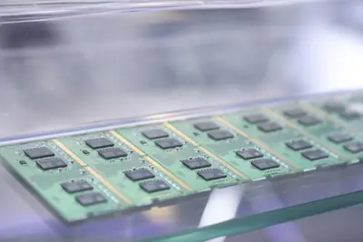
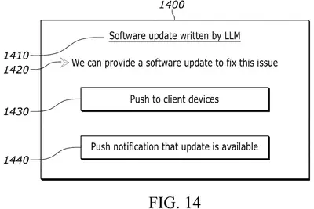
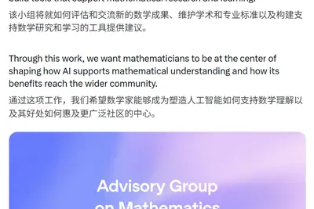
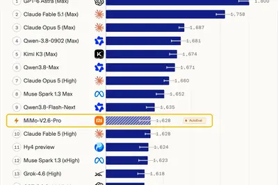
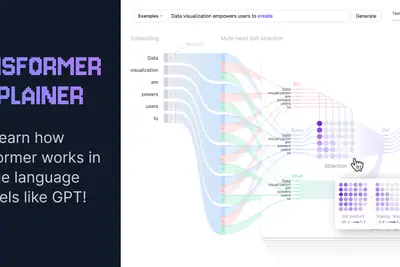
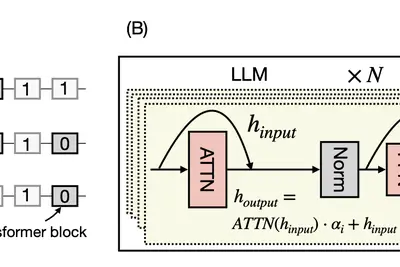
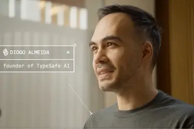

其他
其他
AI 每日新聞彙整
其他
全部主題
其他
4 家媒體報導metamuseamazon
Amazon blocks Meta’s Muse AI agent
Meta's Muse AI agent has been blocked from shopping Amazon on behalf of its users, GeekWire reports. A popup message started appearing on Sunday for Muse users saying that "continued access by an unauthorized AI agent violates Amazon's Conditions of Use, to which our customers ha
- Ars Technica AI Muse, Meta's extraordinarily privileged AI assistant, has a serious 0-day
- TechCrunch AI Meta’s Muse is outpacing ChatGPT’s early mobile launch
- TechCrunch AI Meta’s AI agent has been blocked from using Amazon.com
- INSIDE 給一般人的 AI 助理終於來了？Meta Muse 上線不到兩週登頂美國 App Store，超越 ChatGPT 和 Gemini
- The Verge AI Amazon blocks Meta’s Muse AI agent
3 家媒體報導geminigooglesafety
Google證實Gemini代理人也駭入外部公司網站
華爾街日報、路透社報導，Google Gemini為基礎的代理人也曾在內部測試時駭入其他3家公司內部網路，並登入系統。

2 家媒體報導hbmdramnand
【科技早餐】川習會前美中研議 AI 對話、川普將組「AI 部隊」；中國傳放慢人形機器人上市
【科技早餐】今天精選 6 則國內外重要科技新聞。 ＊川習會前美中研議 AI 對話，美提國安事故通報、川普將組「AI 部隊」 美國財政部長貝森特（Scott Bessent）與中國國務院副總理何立峰，在紐約舉行川習會前的經貿會談。雙方討論建立美中 AI 對話，處理 AI 帶來的機會與威脅。美方並提議建立安全通報機制，當 AI 事件升高到國家安全層級時，兩國可以相互通知，提高資訊透明度。中國是否接受這項具體安排仍不清楚，提案將交由美國總統川普與中國國家主席習近平在峰會上考慮。兩位領袖今年 5 月曾討論 AI 磋商，但相關論壇至今尚未正式成立。 另外，川普表示

- DIGITIMES 記憶體大缺引發長存、長鑫「龍頭之爭」 專利戰一觸即發
- TechOrange 科技報橘 【科技早餐】川習會前美中研議 AI 對話、川普將組「AI 部隊」；中國傳放慢人形機器人上市
2 家媒體報導groupadvisorymathematics
OpenAI forms math advisory group as its AI resolves more than 100 open problems
The group won't be given leeway to slow down or redirect OpenAI's ongoing mathematical research.
2 家媒體報導applesiriiphone
Claim up to $95 today from Apple’s Siri AI settlement – here’s how
Got an iPhone 15 Pro, Pro Max, or 16? Apple is doling out $250 million – here’s how to qualify and file a claim to get your cut.
hvdcnpomlcc
HVDC催生NPO MLCC新需求 國巨、禾伸堂與信昌電布局卡位
AI算力需求快速攀升，GPU與CPU效能要求大幅提高，連帶資料中心功率與能耗急遽增加。

- DIGITIMES HVDC催生NPO MLCC新需求 國巨、禾伸堂與信昌電布局卡位
regulationnvidiadonald
躍升川普頭號商業盟友 黃仁勳改寫美國AI決策版圖
隨著華府圍繞人工智慧（AI）監管的爭辯愈演愈烈，NVIDIA執行長黃仁勳已迅速崛起為美國總統川普（Donald Trump）在該領域最重要政治盟友。
- DIGITIMES 躍升川普頭號商業盟友 黃仁勳改寫美國AI決策版圖
zcodeopensourcesafety
智譜ZCode爆資安爭議 開源、第三方稽核欲挽回用戶信任
中國大模型業者智譜旗下AI程式設計工具ZCode，近期陷入資料安全爭議，開發者質疑程式碼及專案資料可能在未充分告知的情況下被傳送至雲端，甚至引發企業用戶發函要求說...
- DIGITIMES 智譜ZCode爆資安爭議 開源、第三方稽核欲挽回用戶信任
asmlduvdatacenter
光通訊供不應求 穩懋擴廠、砸8億元購入ASML DUV機台
AI資料中心的運算需求激增，「傳輸」成為算力發展的瓶頸，市場技術走向光銅並進、光通訊朝向800G、1.6T加速前進，化合物半導體晶圓代工廠穩懋規劃擴充接收端（PD）...
- DIGITIMES 光通訊供不應求 穩懋擴廠、砸8億元購入ASML DUV機台
manbuiltstores
The man who built Apple’s stores doesn’t buy Silicon Valley’s bet on AI shopping
Apple Store architect Ron Johnson says Apple's secret sauce has always been its people.
pfasdatacenterchemsec
AI 需求推升 PFAS 產能，資料中心冷卻技術恐成「永久化學物質」污染新源頭
化學監督組織 ChemSec 最新報告指出，人工智慧基礎設施快速擴張，全球多家主要 PFAS 生產商也加速擴產 […]
- 科技新報 TechNews AI 需求推升 PFAS 產能，資料中心冷卻技術恐成「永久化學物質」污染新源頭
sd200ultratoken
浪潮信息发布元脑 SD200 Ultra 超节点：单机承载 2.8 万亿参数 Kimi K3，Token 时延首次突破 5.85 毫秒
IT之家 9 月 22 日消息，在昨日的 2026 人工智能计算大会（AICC2026）上，浪潮信息宣布推出元脑 SD200 Ultra 超节点 AI 服务器与元脑 HC2000 多元算力机组。 据官方介绍，元脑 SD200 Ultra 基于国产 AI 芯片打造，单机可承载运行 2.8 万亿参数的 Kimi K3 大模型。 浪潮表示，SD200 Ultra 的 Token 生成时延首次降至 5.85 毫秒以内，相当于单用户速度 170 Tokens/s，达到业界平均水平的 5 倍。该机型支持 10 万亿参数规模前沿模型单机运行。 IT之家注：Token
playstationsie
索尼 SIE 申请“AI 自修复系统”专利：利用人工智能实时生成诊断固件以修复 PlayStation 游戏机故障
IT之家 9 月 22 日消息，据专利聚合网站 Patentlyze 披露，索尼 SIE 近日提交一项基于 AI 的 PlayStation 自动诊断和修复系统专利，该系统可以持续监测联网的 PlayStation 设备，在发现软件问题后由 AI 服务器实时生成针对性的诊断固件，并将其直接部署到出现故障的主机上，从而减少用户联系客服的需求。 IT之家参考专利描述，该系统的目标之一是减少保修申请、客服工单以及传统故障排查过程中需要用户反复操作的步骤。当系统检测到主机存在问题后，AI 模型不会简单调用预先编写好的修复方案，而是根据具体故障生成相应的修复代码，

openaiintel
OpenAI 宣布成立数学与 AI 顾问组，神秘新模型 24 天攻破 100+ 世界级难题
IT之家 9 月 22 日消息，OpenAI 宣布成立“数学与 AI 顾问组”（Advisory Group on Mathematics and Artificial Intelligence）。据介绍，该顾问组设在普林斯顿高等研究院，由九位数学家组成，将独立于 OpenAI 运作。 相较于此，更重磅的是 OpenAI 在公告中披露 —— 公司于 8 月 28 日开始训练的一个神秘模型已成功解决了多个数学领域中 100 多个长期未解决的开放问题（包含此前引发争议的纳维-斯托克斯千年大奖难题）。 OpenAI 称，该模型在数学领域的进展速度令公司内部的数

企業小心落入「決策債務」停滯陷阱，AI 資訊過量只會讓待辦清單越來越長
企業在導入 AI 工具時，除了熟悉的技術債務，還可能面臨一種新營運壓力：決策債務。這個概念指的是，當機器學習與 […]
- 科技新報 TechNews 企業小心落入「決策債務」停滯陷阱，AI 資訊過量只會讓待辦清單越來越長
jevllmsystem
Jev introduces a new shape of LLM - System One, aka Decision Models
Last week TypeSafe AI unveiled Jev , their first example of a new category of model that they are calling "System One models" (I'm with Maggie Appleton, I think "decision models" is a better name for these). Jev is an interesting variant on the usual LLM format: it still accepts
2.6mimo-v2.6flash
小米 MiMo-V2.6 发布：Pro 与 Flash 双版本价格不变，超越 Kimi K3、GLM-5.3 成为当前 AA 指数排名最高的开源模型
IT之家 9 月 22 日消息，小米今日凌晨正式发布并开源了全新的 Xiaomi MiMo-V2.6 系列，包含 Pro 与 Flash 两个原生全模态模型。 小米称这是其探索 RSI（递归自我改进）路径的关键一步，通过规模化扩展强化学习算力，让模型在持续的探索与反馈中拓展智能边界。 得益于 RL 算力的扩展，MiMo-V2.6-Pro 在 Artificial Analysis Intelligence Index（AA 综合智能指数）v4.3.2 中取得 46 分，超过 Kimi K3（44 分）和 GLM-5.3（45 分），成为当前 AA 指数上

grok4.7spacexai
马斯克 SpaceXAI 发布旗下最强编码和知识处理模型 Grok 4.7，百万词元输入 2 美元起
IT之家 9 月 22 日消息，SpaceXAI 今日宣布推出新一代 Grok 4.7，主打编程和知识工作场景。 官方称其采用全新更大规模基础模型，并通过更长时间的强化学习训练提升复杂任务处理能力，是该公司目前最强的编码和知识处理模型 —— 速度是同类模型的两倍，价格却只有一半。 如前所述，Grok 4.7 针对编程和知识工作进行了优化。与 Grok 4.6 相比，新模型能够在困难任务上持续更长时间，并加强了对自身输出结果的检查能力。 在 CursorBench 4.0 测试中，Grok 4.7 面向长时间运行的编程任务，在价格与性能方面处于同类模型的前
labsamiworld
「世界模型」資金先進場，產品卻還沒定型：AI 新創究竟在藏什麼？
「世界模型（World Model）」正成為 AI 資本市場的新熱門領域，但一個反差也越來越明顯：錢已經大量進場，真正能賺錢的產品卻還沒有定型。 今年以來，Yann LeCun 創立的 AMI Labs 募得 10.3 億美元，李飛飛的 World Labs 也完成 10 億美元融資。更極端的是，《Financial Times》9 月報導，由前 Google DeepMind Genie 團隊成立的 Emulate，創立約一個月就洽談最高 7 億美元融資，估值約 37 億美元，但該公司至今仍未公開明確產品。 資金先進場，業者卻不急著亮牌 《TechCr
- TechOrange 科技報橘 「世界模型」資金先進場，產品卻還沒定型：AI 新創究竟在藏什麼？
californiadataamazon
California tightens rules on AI data center energy and water use
California Gov. Gavin Newsom has signed seven bills designed to prevent AI data centers from passing utility costs onto residents, as reported earlier by the Los Angeles Times. The package of laws requires the California Public Utilities Commission to introduce a new rate classif
urlhttpscomments
Transformers Explained Visually
Article URL: https://poloclub.github.io/transformer-explainer/ Comments URL: https://news.ycombinator.com/item?id=49792342 Points: 158 # Comments: 27

- Hacker News (100+) Transformers Explained Visually
- Hacker News (100+) Grok 4.7
daysleftticket
Discover what’s next: 5 days left to save up to $200 on your TechCrunch Disrupt 2026 ticket
Five days left to save up to $200 on your TechCrunch Disrupt 2026 pass + 50% off a second one. Join 10,000+ founders, investors, and operators at San Francisco’s Moscone West, October 13-15. Grab your ticket savings before prices go up on September 25 at 11:59 p.m. PT.

tariffsrareminerals
AI, Tariffs, Rare Minerals: What to Expect From Trump’s Upcoming Summit With Xi Jinping
Washington and Beijing have grown ever more linked in the AI boom, making hardware exports and technological restrictions hefty bargaining chips in negotiations.
coolingpowerproducts
NVIDIA Launches DSX Ready to Qualify Power and Cooling Products for AI Factories
Every AI factory needs power and cooling that fit its computing architecture. As AI infrastructure expands, power, cooling, water, site and grid constraints are shaping what builders can deploy. Choosing products that fit the complete factory design helps builders turn computing
tabbyformeraccountant
With Tabby, a former accountant is using AI to make accountants obsolete
Tabby is designed to be a real-time bookkeeping interface, handling clients’ paperwork as it gives them up-to-the-minute data on their business’s profit and loss.
egyptecosystemenablement
From Enablement to Execution, Egypt’s AI Ecosystem Reaches Production Scale
Today, Egypt’s AI builders gathered in the Grand Egyptian Museum for a reception that highlighted the nation’s rapidly growing AI ecosystem — spanning AI natives, developers, researchers, startups and enterprises — building applications across industries. The event included a key
macstudiomini
苹果 2026 款 Mac mini 发售：全新 M6 / M5 Pro 芯片，6999 元起
IT之家 9 月 21 日消息，苹果全新 Mac mini（2026 款）将于 9 月 22 日发售，搭载全新 M6 芯片和 M5 Pro 芯片，售价 6999 元起。 IT之家从官方介绍获悉，M6 芯片集成 12 核中央处理器，比前代增加 2 颗核心。12 核图形处理器同样比前代增加 2 颗核心，首次为 Mac mini 的每颗图形处理器核心均配备神经网络加速器，相比搭载 M4 芯片的 Mac mini，AI 性能提升最高可达 4 倍，图形处理速度提升最高可达 2 倍，全新双 16 核神经网络引擎性能相比前代提升最高可达 2 倍。此外， 16GB 的标
forcerejectsslowdown
Trump rejects AI slowdown calls, launches "AI Force" instead
The president offered few details on what his proposed new AI Force would do.
- Ars Technica AI Trump rejects AI slowdown calls, launches "AI Force" instead
startupdisruptnext
Where will the next breakout startup come from? Benchmark’s full partnership weighs in at TechCrunch Disrupt 2026
Where will the next breakout startup come from? Benchmark’s full partnership weighs in on the main stage at TechCrunch Disrupt 2026. Save up to $200 before September 25 at 11:59 p.m. PT. Register now.
robbysteinjoins
From first users to billions: Google’s Robby Stein joins TechCrunch Disrupt 2026
From first users to billions: Google’s Robby Stein joins TechCrunch Disrupt 2026. Lean in on this Builders Stage session. Save up to $200 before September 25.
c10socmax
联发科技面向 Googlebook 推出天玑 CX C10 Max SoC
IT之家 9 月 21 日消息，联发科技 (Mediatek) 今日面向 Googlebook 推出天玑 CX C10 Max 芯片，这也是天玑 CX “计算体验”系列的首款 SoC。 天玑 CX C10 Max 基于台积电 3nm 先进制程，拥有 8 个“全大”CPU 核心、11 核 Immortalis-G925 GPU、45 TOPS NPU，集成支持 32MP 摄像头传感器的 Imagiq 1090 ISP，支持 7.3Gbps Wi-Fi 7、蓝牙 6.0。 其 CPU 由 1 个 Cortex-X925 内核、3 个 Cortex-X4 内核
pruningllmsphysicist
Pruning LLMs Like a Physicist: Block Removal as an Ising Optimization Problem

jevtypesafe
Jev是什麼？TypeSafe AI新模型功能、價格、用途與使用教學一次看
TypeSafe AI推出AI決策模型Jev，不生成文字，專門負責分類、評分與機率判斷。速度最快提升200倍、輸出免費，本文整理功能、用途與上手教學。

nscaleipo1030
冲刺 IPO，Nscale 的 1030 亿美元数据中心订单高度依赖微软和 Anthropic 两大客户
IT之家 9 月 21 日消息，据彭博社报道，英国 AI 基础设施公司 Nscale 过去三年客户签约量激增千倍，主要归功于两家对人工智能算力如饥似渴的公司：微软和 Anthropic。 这两家公司贡献了该公司在首次公开募股（IPO）前夕披露的 1,030 亿美元 （IT之家注：现汇率约合 6,905.85 亿元人民币） 合同总额中的 85%。不过，Nscale 尚未为 Anthropic 的合作项目落实融资。 这些细节凸显了伴随 AI 热潮兴起的新兴行业所面临的风险。Nscale 专门开发为 AI 服务定制化的数据中心，与“新云”（neocloud）厂
androidphonethinks
Got an Android Phone? Google Thinks You’ll Probably Want a Googlebook Laptop
Apple lovers have long enjoyed seamless connectivity between their iPhones and Macs. Now, Google’s bringing that experience to Android.
funding100openai
軟銀砸 100 億美元加碼 OpenAI！發行 110 億美元債券籌資
軟銀集團週一（21 日）公布發行條款，計畫發行總額 100 億美元及 10 億歐元（約 11.5 億美元）的優 […]
- 科技新報 TechNews 軟銀砸 100 億美元加碼 OpenAI！發行 110 億美元債券籌資
- 科技新報 TechNews 軟銀集團發行逾百億美元債券，為 OpenAI 投資籌資
alongvirtualwall
4 ways to address the failures we found along the US border’s “virtual wall”
MIT Technology Review today published our investigation into how many people have died near the “virtual wall” of surveillance towers that the US government has installed along the US-Mexico border. We found cases of people who walked undetected through areas surveilled by advanc
- MIT Technology Review AI How we made the first comprehensive map of deaths along the US border’s “virtual wall”
- MIT Technology Review AI 4 ways to address the failures we found along the US border’s “virtual wall”
surveillance.catchborder
The US spent billions on border surveillance. Why can’t it catch people before they die?
When José Morales Bernal crossed the border into the United States on April 8, 2024, the day before his 32nd birthday, it should have triggered a chain of technological alerts and human responses. As he walked through the desert in southern New Mexico that morning, he was within
- MIT Technology Review AI The US spent billions on border surveillance. Why can’t it catch people before they die?
shediegoplain
She died at the San Diego border. A surveillance camera was in plain sight
She had only walked for a couple of hours, and already she was lost. It was early afternoon on Sept. 14, 2025, when 30-year-old Graciela Gómez Hernández crossed the border from the eastern edge of Tijuana into Southern California, sending voice messages to her mother and sister a
- MIT Technology Review AI She died at the San Diego border. A surveillance camera was in plain sight
higgsfieldvideogpt-6
Higgsfield AI ships new video features in a day with GPT-6 Astra
With GPT-6 Astra, Higgsfield AI makes video ad creation easier for small businesses and brings new creative tools to market faster.